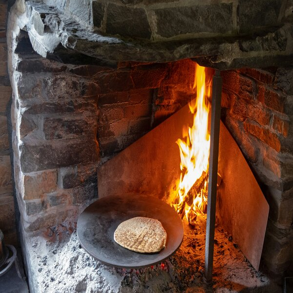
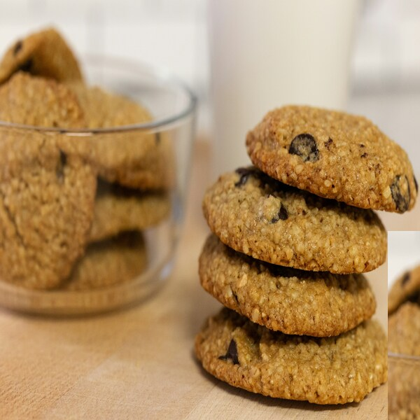
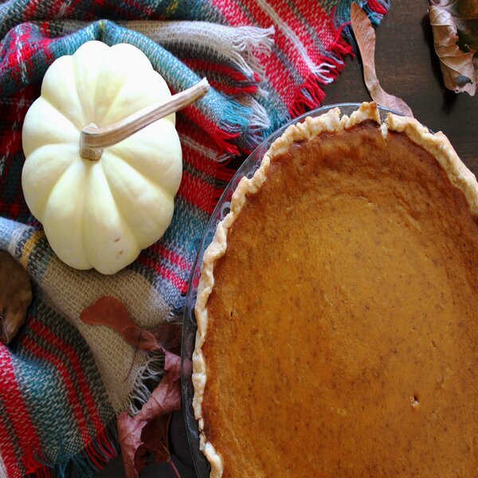

Hello! Welcome to the Johnson Family Recipie page! Here you will find 3 recipies from my Dads side of the Family! I hope you enjoy these recipies as much as I have over the years of eating them!

Johnson Family - Norwegian Lefse
5 lbs potatoes, peeled. 1/4 cup of butter, up to 1/3 cup of heavy cream, 1/2 Tbsp salt, 1/2 Tbsp white sugar, 1 3/4 cups of Flour.
Place potatoes in a pot with water and bring to a boil. Reduce to medium-low and simmer until tender then drain. While potatoes are hot run through a potatp ricer into a large bowl. Beat butter, cream, salt, and sugar into riced potatoes. Let it cool to room temperature. Stir in flour and then pull mixture apart into desired sized balls. Then Flour a board or Cloth and roll out mixture. cook Lefse on each side until golden brown(Normally aminute on each side.) Serve with Jam, jelly syrup or anything your Heart desires!

Oatmeal Cookies
1 1/2 cups of Sugar, 3/4 cup of margarine or butter(cream well and add), 3 eggs (one at a time, blend well), 1 cup of buttermilk, 2 1/3 cups of flour, 1 Tsp of soda, 1 Tsp of cinnamon, 2 cups of Oatmeal. Sift Flour, Soda, and Spices,alternately with buttermilk to egg mixture. Sir in Oatmeal and 1 cup of Raisins. Drop by spoonful on greased sheet. Bake at 350 degrees for 15 mins or until golden brown.

Impossible Pumpkin Pie
3/4 cup of sugar, 2 eggs, 1/2 cup of bisquick mix, 2 Tbsp margarine, 1 can(13oz) of evaporated milk, 1 can(16oz) Pumpkin, 2 1/2 Tsp Pumpkin pie spice,, 2 Tsp Vanilla.
Heat oven to 350 degrees. Grease pie plate sice 9" x 1 1/2" or 10" x 1 1/4. Beat all ingredients until smooth. pour into pie plate. Bake until knife inserted in center comes out clean. Aprox. 1 hr and 10 mins.